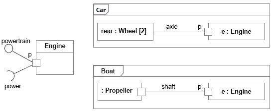

| Концепция: Структурированный класс |
 |
|
| Связанные элементы |
|---|
ОпределениеВ рамках UML ([UML04]) классы (Class) представляют собой подтип EncapsulatedClassifier и метакласса Class одновременно, благодаря чему у объектов Class могут быть внутренняя структура и порты. Кроме того, компоненты в UML представляют собой подтип типа Class. Таким образом, в контексте RUP как компоненты, так и классы представляют собой структурированные классы. КомпонентЭкземпляр структурированного класса содержит объект или набор объектов для каждого компонента. Все экземпляры уничтожаются при уничтожении содержащего их экземпляра структурированного класса. На следующем примере показаны два представления класса Car:
Пример: роли компонентов в структурированном классе СоединительСоединитель - это экземпляр отношения между двумя компонентами в структурированном классе. Соединители позволяют обмениваться данными. Соединители могут быть реализованы в виде обычных или временных связей, например в форме параметров процедур, переменных, глобальных значений и других механизмов. Внутренние взаимосвязи структурированного класса указываются с помощью соединителей сборки и соединителей делегирования:
ПортПорт - это элемент структуры класса. Привязав обмен данных между структурированным классом и внешними объектами к определенным портам и интерфейсам, можно усилить инкапсуляцию и повысить точность спецификаций и протоколов обмена данными структурированного класса. Все необходимое для обмена данными через порт взаимодействия указывается в описании необходимых и предоставляемых интерфейсов этого порта. Если все взаимодействие структурированного класса со средой осуществляется через порты, внутреннее содержание структурированного класса будет полностью изолировано от среды. Это позволяет использовать такой структурированный класс в любом контексте, удовлетворяющем требованиям, предъявляемым портами этого класса. Не делается никаких предположений относительно способа реализации порта. Порт может быть явным объектом или полностью виртуальной концепцией, не существующей в реализации явно. Ниже приведены примеры портов: Пример 1 Порт класса Engine, используемый классами Car и Boat На рисунке выше показан класс Engine с портом p и двумя интерфейсами:
Через порт p класс Engine полностью инкапсулирован, и для его реализации не нужны
никакие сведения о среде, в которой класс Engine будет работать. Если среда соответствует ограничениям, установленным
предоставляемым и необходимым интерфейсами класса Engine, класс будет работать правильно.
Пока взаимодействие между классом Engine и компонентом, привязанным к его порту p, соответствует ограничениям и спецификациям интерфейсов, двигатель будет работать правильно независимо от того, где он находится: в автомобиле или в лодке. Более того, если у класса Engine есть другие порты, например порт f (потребление топлива), колеса и винт по-прежнему будут обращаться к классу Engine через порт p. С портом f будет взаимодействовать указатель уровня топлива, независимо от того, какое топливо подается в двигатель и какие типы датчиков уровня топлива применяются в автомобилях и в лодках. Пример 2Данный пример основан на API протоколов Java ([JAV03]) - пакете, предоставляющем, среди прочих, следующие классы и интерфейсы для ведения протоколов на платформе Java 2.
Эти классы и интерфейсы участвуют в двух важных видах взаимодействий. Одни классы и интерфейсы применяются для занесения информации в протокол, а другие - для управления протоколами. На следующем рисунке проиллюстрирована разница во взаимодействии клиентов и администраторов с протоколом в модели UML:
Виды взаимодействия клиентов и администраторов с протоколом Одно из возможных представлений протокола и его служб в UML 2.0 - компонент с портами и объявленными интерфейсами, показанный на следующем рисунке:
Пакет Java Logging API, реализованный в виде компонента с набором интерфейсов, сгруппированных по портам В спецификации Java Logging API некоторые службы ведения протокола реализованы в виде классов, а некоторые - в виде интерфейсов. В данном примере все службы моделируются в качестве интерфейсов, которые могут быть реализованы внутри компонентов. Две разновидности поведения, связанные с взаимодействиями записи и администрирования, могут быть представлены интерфейсами, объединенными в логические группы. Таким образом, получается следующая картина:
Такой способ моделирования позволяет разделить зоны ответственности путем группировки интерфейсов по портам. При этом сохраняется запас точности для спецификации компонентов и параметров их взаимодействия с внешним миром. МоделированиеВ процессе разработки классы и компоненты могут быть представлены в виде наборов взаимосвязанных блоков, которые, в свою очередь, допускают дальнейшую декомпозицию. Составная диаграмма структуры может применяться для иллюстрации внутренней структуры класса. Например, на следующем рисунке показана составная диаграмма структуры кассы в системе продажи билетов. Класс состоит из трех частей:
Части системы взаимодействуют через стандартизированные интерфейсы, привязанные к портам. Касса как единый объект, в свою очередь, обменивается данными с внешним миром через единый порт. Сообщения, поступающие в этот порт, передаются в класс продавца, однако эти сведения о внутренней структуре класса кассы скрыты от внешних клиентов.
Пример: составная диаграмма структуры системы продажи билетов. Представление UML 1.xУчтите, что понятие структурированного класса появилось только в UML 2.0. Большинство характеристик капсулы RUP можно передать в виде структурированного класса (дополнительные сведения об этом приведены в разделах Рабочий продукт: капсула и Рекомендации по рабочим продуктам: Капсула).Если ваш инструментарий поддерживают только UML 1.5, можно воспользоваться альтернативным решением, описанным в разделах Рабочий продукт: Капсула и Рекомендации по рабочим продуктам: Капсула.
Дополнительные сведения приведены в разделе Различия между UML 1.x и UML 2.0. |

© Copyright IBM Corp. 1987, 2006. Все права защищены.. |